Getting Started
Required Materials
This lab requires the following materials:
- Computer capable of running MP LAB X (Windows, Linux, MacOS), further system requirements found at https://www.microchip.com/en-us/tools-resources/develop/mplab-x-ide
- Curiosity Nano AVR64DD32 board
- Micro USB to connect computer to board
Learning Objective
- How to install MP LAB X and it’s compiler
- How to connect MP LAB X to the board and install necessary libraries
- How to create a project and run code
What is MPLAB X IDE?
In this section of the course, we will be learning how to use another embedded programming program, MPLAB X IDE. MPLAB X IDE is a proprietary integrated development environment designed to work with Microchip’s line of microcontrollers. It is most commonly used in professional or settings due to its encompassing set of developer features.
Why use MPLAB X IDE over Arduino IDE?
Leading up to this lab, you have been developing relatively simple programs using Arduino IDE. So why switch over to MPLAB X IDE? The reason ultimately comes down to differences in features:
- MPLAB X IDE’s debugger offers deeper control of the chip’s embedded system with features such as register bit manipulation, breakpoints, call stack, memory monitoring, application profiling, and pin manager
- MPLAB X IDE’s project based development makes it easier to build out multi file programs than Arduino IDE’s sketch based development.
- MPLAB X IDE’s Microchip Code Configurator simplifies adding peripherals to the project instead of relying on third party libraries to configure peripherals
Installation Walkthrough (MPLAB X IDE)
- Go to the MPLAB X download page on microchips website at https://www.microchip.com/en-us/tools-resources/develop/mplab-x-ide
- Download the MPLAB X IDE installer (Windows)
- Open the installer once it has finished downloading and select next, read license agreements before proceeding. Leave the Use System Proxy settings and continue to the next screen. 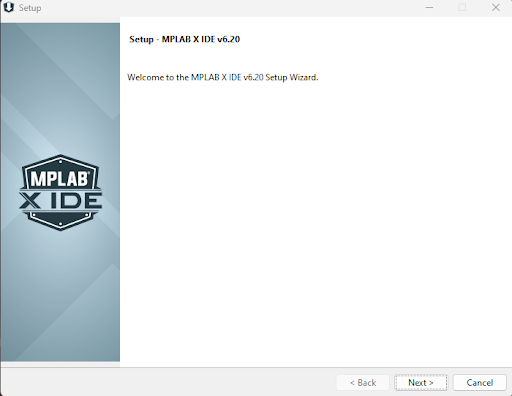
- Select the MPLAB X IDE and the 32-bit MCU package, select next and begin the installation

- Next, select the 32-bit device compiler to install next 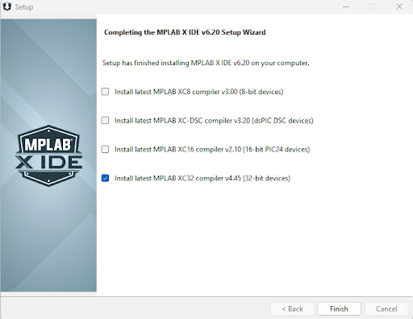
Installation Walkthrough (MPLAB XC32 Compiler)
- The compiler install wizard should open after finishing the IDE installation process. If not, it can be found at https://www.microchip.com/en-us/tools-resources/develop/mplab-xc-compilers/xc32 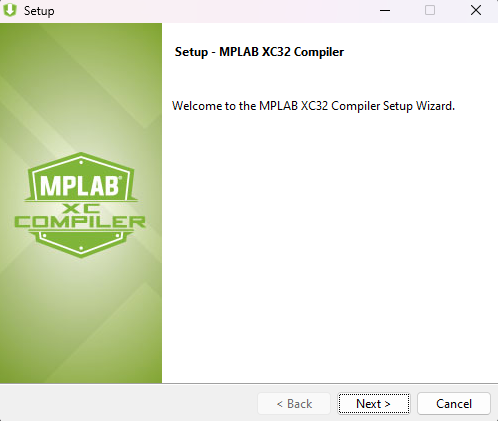
- At the licensing page, select the free license, select next, and begin the installation. 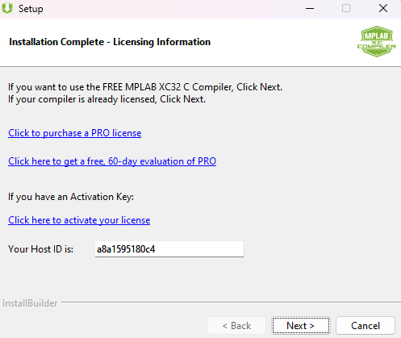
- After installation has completed, select next. And with that, MP LAB X should be successfully installed for development with the Curiosity Nano. 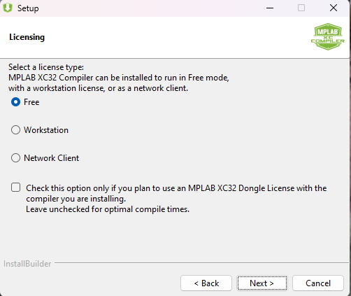
Discover Portal
In this section, we will open MPLAB Discover. It is a searchable catalog for exploring project examples, documentation, tutorials, videos, source code and other resources for microcontroller devices.
- Locate the MPLAB Discover icon in the toolbar menu. 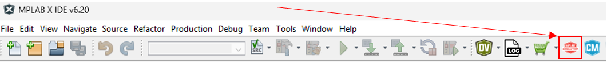
- This will open the Discover Portal. In the search bar, type ‘AVR64DD32’ to find resources related to the microcontroller. 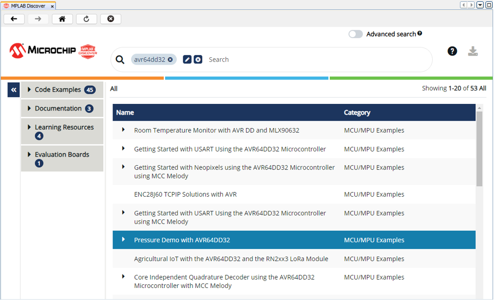
Configuration
This section covers a few important configurations for using MPLAB X. Some of these configurations are recommendations and do not need to be changed.
Setting the Color Theme and Font
The default theme for MPLAB X is very bright and can be hard on the eyes, so many users prefer to change it. To adjust the theme:
- Navigate to Tools → Options → Fonts & Colors.
- Under Profile, select the theme you prefer. The recommended theme is Norway Today.
- To change the font, locate the Font section and click on the three dots.
- Select your desired font and size. The recommended font is Cascadia Code, as it matches the one used in Visual Studio Code.
Managing Embedded Toolchains
The necessary toolchains should be added automatically when MPLAB X is installed. However, you can manage them manually if needed:
- Go to Tools → Options → Embedded.
- Within the Embedded options, select Building Tools.
- You should see the XC8 compiler listed, which is the compiler we will use.
Content Manager
In this section, we will open the MCC Content Manager to update all libraries, drivers, and peripheral code related to the AVR64DD32. You need to have internet access to perform the updates.
- Locate the CM icon in the toolbar menu. Alternatively, access it by navigating to Tools -> MCC Content Manager 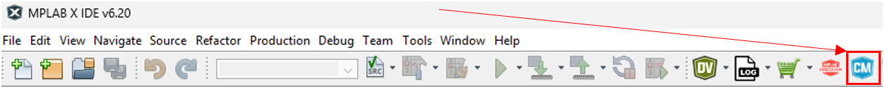 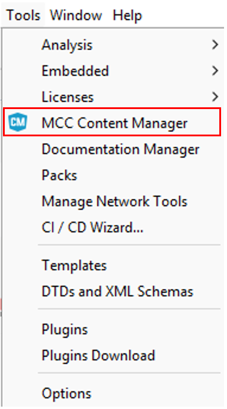
- In the search filters, open the Select Device pull down menu under Device, then type AVR64DD32 to find the microcontroller. Click on it to select. 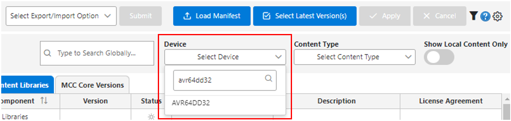
- Click the Select Latest Version(s) button at the top center to choose the most recent versions of the libraries. 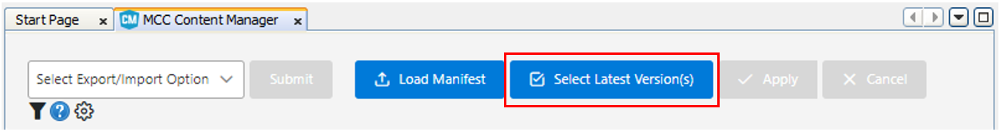
- After performing this selection, click on Apply. 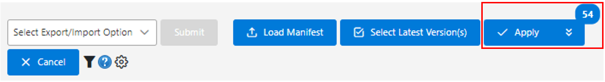
- Allow a few seconds for the libraries and drivers to download and install. Plug in your board, and you should see the Curiosity Nano appear in your IDE! 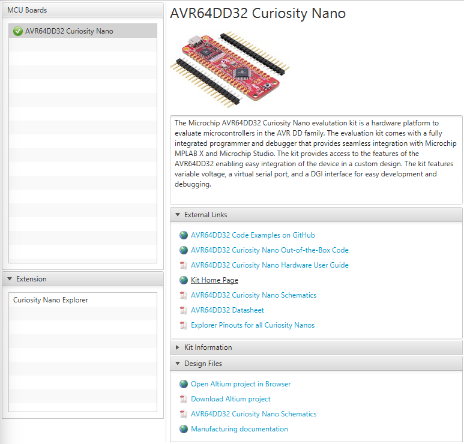
Create a New Bare Metal Project in MPLAB X
- Start a New Project
- Go to File ⇾ New Project
- Select Application Project(s)

- Select Device & Compiler
- Under Select Device, choose the appropriate one.
- Set the compiler to XC8.
- Set Project Name & Folder
- Enter mplabx_lab0 as the project name.
- Choose the default path in Project Location for your project.
- Keep all other settings as defaults and click Finish.
- Understanding the Project Structure
- The newly created project is currently empty, with no files.
- The Projects tab lists project resources and assets.
- The Files tab displays the folder structure.
- The Dashboard provides an overview, including the build environment, compiler settings, and available software packs.
- Adding main.c to the Project
- In the Projects tab, right-click Source Files → New → main.c.
- Name the file main.
- ⚠️ Do not add it via the Files tab, as it won’t be registered in the build system.
- Essential Headers in main.c
- In main.c, you will find the directive #include <xc.h>. This header provides
definitions
required by the compiler. To explore the definitions it provides, left click on the
directive and use Navigate → Go to Declaration / Definition. In xc.h, you will find
the
following definitions:
- avr/io.h ⇾ Deprecated; no need to worry about it.
- avr/builtins.h ⇾ Contains built-in compiler functions; also not a concern.
- NOP ⇾ No Operation (used for timing or debugging).
- ei ⇾ Enables global interrupts.
- di ⇾ Disables global interrupts.
- In main.c, you will find the directive #include <xc.h>. This header provides
definitions
required by the compiler. To explore the definitions it provides, left click on the
directive and use Navigate → Go to Declaration / Definition. In xc.h, you will find
the
following definitions:
MPLAB Code Configurator
The MPLAB Code Configurator (MCC) provides a visual interface to add and configure peripherals within our projects. The MCC interface mainly consists of three views: the Resource Management Area, the Composer, and the Application Builder. The MCC view can be opened by clicking on the MCC icon on the main toolbar. Keep in mind that in order to open MPLAB Code Configurator, there needs to be an active project. 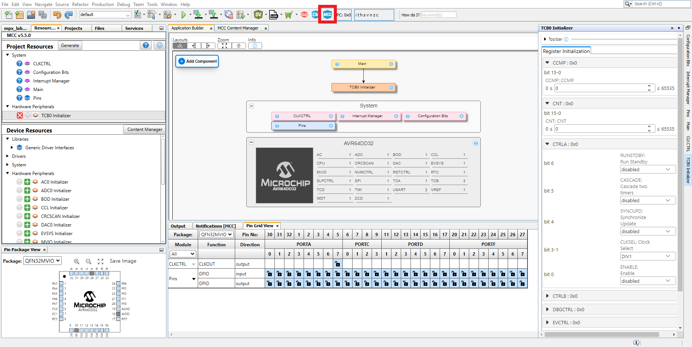
- Resource Management Area (Top Left Panel) – An interface to view available and currently used
resources in the project
- Project Resources – Used to configure interrupts, pins, and system functions including clock and configuration bits. The “Generate” button is used to create project code from the configuration.
- Device Resources – Displays all hardware peripherals and system modules compatible with the target device (AVR64DD32 in our instance). Clicking on the plus icon next to the resource adds the selected resource to both the Project Resources and Application Builder.
- Application Builder (Top Middle Panel) – A high level view of the application where
dependencies from Project Resources are visualized as a tree structure. The “Add Component” button
is a windowed view to add and manage resources, similar to the Resource Management Area.
- Application – represents user-created project resources, most prominently main.c
- System Drivers – represents system functionality such as clock, interrupt, and pins
- Device – lists the available hardware peripherals on the target device (AVR64DD32). The number represents the number of instances available to the project.
- Composer (Right Panel) – A hidden panel that can be accessed by clicking on the gear icon next to resources on the Application Builder or by clicking on resources within Project Resources. Displays configuration options for the selected resource.
- Pin Package View (Bottom Left Panel) – A hardware level view of available and allocated pins
on the
(AVR64DD32) microcontroller. Clicking on a pin displays available functions to that pin.
- Grey pins – the pin is not available.
- Blue pins – the pin is available.
- Light green pins – the pin is currently in use in the project.
- Pin Grid View (Bottom Center Panel) – Visualizes the available pins organized by GPIO port on the (AVR64DD32) microcontroller. Similar to how we used pinMode() in Arduino, we can configure a pin as input or output by clicking in the grid.
Understanding the Code: Blinking an LED on PORTF Pin 5
This program configures pin 5 on PORTF as an output and toggles an LED in a loop with delays. Below is a
step-by-step breakdown of the key parts.
📌 You can find this C file under IntroductionToMPLABX/Code/GettingStarted/mplabxlab0.c
- Define the LED Pin.
#define USR_LED 5- USR_LED represents pin 5 on PORTF.
- Configure GPIO Pin 5 as an Output.
PORTF.DIRSET = (1 << USR_LED);- This sets bit 5 in the PORTF.DIR register to 1, configuring pin 5 as an output. The same result can be achieved by using a read-modify-write operation like PORTF.DIR |= (1 << USR_LED). However DIRSET is faster and it also only modifies the specified bit without affecting others.
- To apply this change manually, navigate to Debugging → IO View and enable bit 5.
- Turn Off the LED (Active-Low Configuration)
PORTF_OUTSET = (1 << USR_LED);- We just made pin 5 into an output. However, since the board is active-low, the LED is currently on because the output register is low (0). Now we set the output register high (1) to turn off the LED.
- Main Loop: Blinking an LED
- Now we will blink an LED. First, let’s enter an infinite loop and clear bit 5 to set the output low, turning the LED on.
while (1) { PORTF.OUTCLR = (1 << USR_LED); } - We will now introduce a delay. But first, we need to define timing parameters. When the chip wakes up at reset, the hidden boot code in the part sets the oscillator to run at 4 MHz. This must be configured in our program by defining the system clock frequency. Add this line to the top of the program:
- This definition is used by functions like _delay_ms() to calculate accurate time delays. If the value is incorrect, delays will be inaccurate. We also need to include the necessary header file that provides _delay_ms(). Add this at the top of main.c.
- Now we have access to the thread-blocking delay function _delay_ms(). In our loop, let’s introduce a blocking delay of 100 milliseconds.
- Now we can turn the LED off by setting bit 5 of the output register to high.
- Finally, let’s introduce another blocking delay, keeping the LED off for 900 ms before repeating the cycle.
- Build the Program
- Save the program and build it by clicking on the hammer icon in the toolbar.
- In the project dashboard, you'll notice that the project is configured for the AVR64DD32. Right-click on PORTF → Definitions to open the ioavr64dd32.h file. Each microcontroller has a dedicated header file like this, containing #define directives, symbolic names, and specific pointer definitions, as all peripherals in this microcontroller are memory-mapped. PORTF is actually a dereferenced pointer, and its memory location (in RAM) is 0x04A0
- Scroll down to find the complete list of port structure definitions.
- Once you're done, click on Make and Program Device Main Project 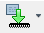
- If prompted, select the AVR64DD32 as your target tool.
- See the blinking LED in action!
#define F_CPU 4000000UL
#include <xc.h>
#include <util/delay.h>
while (1) {
PORTF.OUTCLR = (1 << USR_LED);
_delay_ms(100);
}
while (1) {
PORTF.OUTCLR = (1 << USR_LED);
_delay_ms(100);
PORTF.OUTSET = (1 << USR_LED);
}
while (1) {
PORTF.OUTCLR = (1 << USR_LED);
_delay_ms(100);
PORTF.OUTSET = (1 << USR_LED);
_delay_ms(900);
}
Debugging With MPLAB X
The MPLAB X IDE brings debugging to the table, which is both fun and useful.
- Go to Tools → Options → Embedded → Generic Settings → Debug Startup and select Halt at Main.
- Now, run the program by clicking Debug Main Project.
- Go to Window → Debugging → IO View and scroll down to PORTF to inspect the state of the ports during debugging.
- Click Step Over or press F8 to see the effect of the statement PORTF.DIRSET.
- Step through the program until PORTF.OUT is set to high. 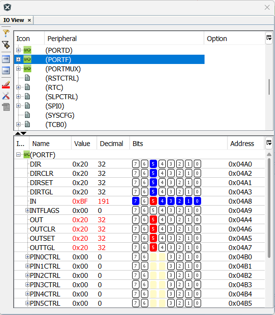
In this part of the debug process, we’re stepping through the program to observe the changes in
PORTF. When we step into the statement where PORTF.DIRSET is executed, you'll see that bit 5 of the
PORTF direction register is set, enabling the corresponding pin as an output. The amber LED is on
because the PORTF.OUT value is low (0), due to the active-low configuration of the LED. As we
continue stepping through, you'll notice that the PORTF.OUT value changes to high (1), turning the
LED off.
An important observation in modern microcontrollers like the AVR is that the IN pin will always
reflect the state of the OUT pin, due to an independent digital path. This means if there’s a
discrepancy between the OUT and IN states (e.g., OUT is high but IN is low), it indicates a problem,
such as a short circuit, which is useful for diagnostics.